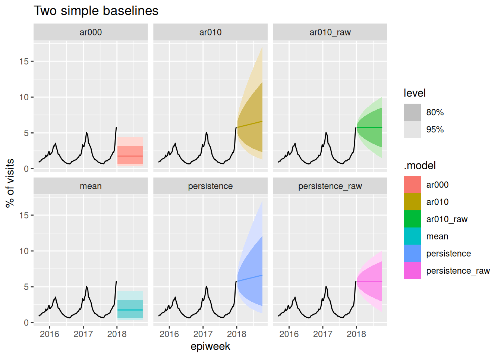
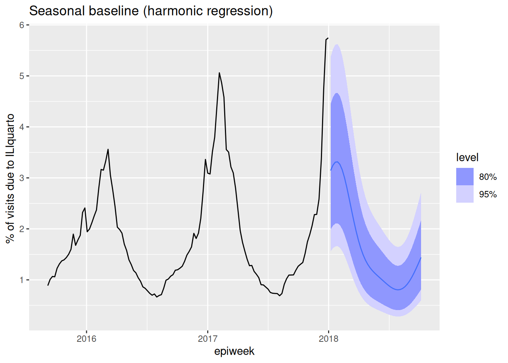
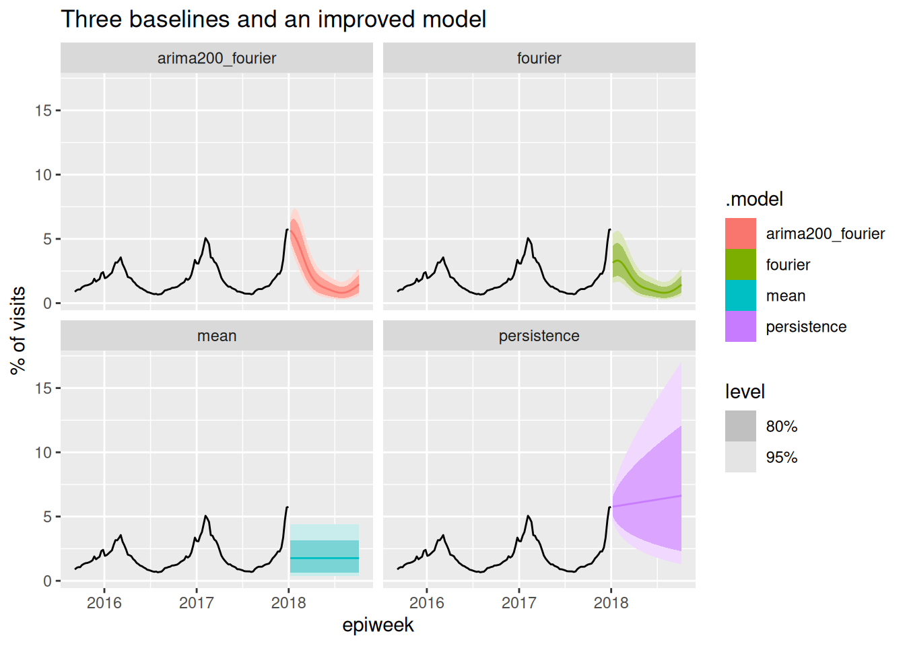
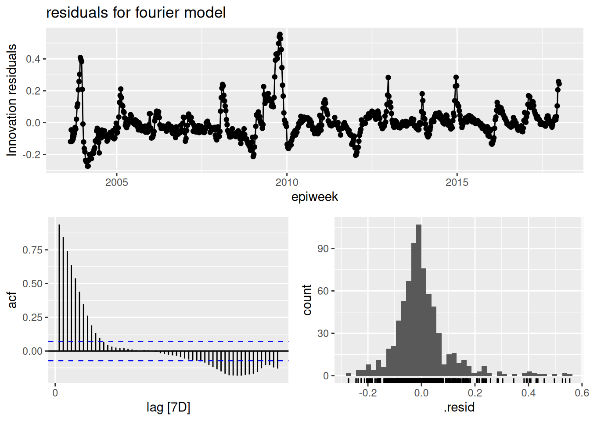
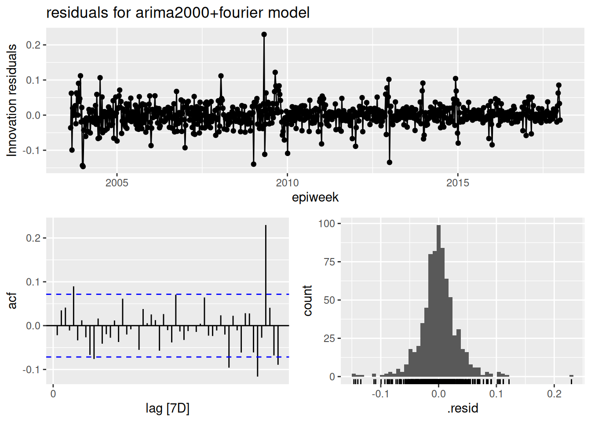

library("nfidd.forecasting")
library("fable")
library("dplyr")
library("ggplot2")
library("ggtime")Baselines and seasonality
Introduction
In the previous session we built some simple ARIMA models and used a fourth-root transformation to keep our forecasts positive. Before we try to build better models, though, we need something to compare them against. In this session we introduce the idea of baseline (reference) models — deliberately simple, naive forecasts — and then treat seasonality as one more reference point before combining it with recent dynamics to (hopefully) improve on all of them.
Slides
Objectives
The goal of this session is to introduce baseline/reference models, to build a seasonal baseline for the ILI data, to see whether adding recent dynamics improves on the baselines, and to use residual diagnostics to judge whether a model has captured the structure in the data.
Caution
As with the last session, none of the models introduced in this section are designed for real-world use!
NoteSetup
Source file
The source file of this session is located at sessions/baselines-and-seasonality.qmd.
Libraries used
In this session we will use the nfidd.forecasting package for some flu data, the fable package to fit and forecast models, the dplyr package for data wrangling, and the ggplot2 and ggtime packages for plotting.
Tip
The best way to interact with the material is via the Visual Editor of RStudio.
Initialisation
We set a random seed for reproducibility, load the same flu data as in the previous session (filtered to end at the start of 2018), and re-create the fourth-root transformation we defined there.
set.seed(123)
data(flu_data)
flu_data <- flu_data |>
filter(epiweek <= as.Date("2018-01-01"))Baseline (reference) models
Before we ask “is my model any good?”, we have to ask “good compared to what?”. A baseline (or reference) model is a deliberately simple, naive forecast that any useful model ought to beat. Baselines are worth taking seriously because:
- they set a floor — if a complicated model can’t beat a simple baseline, something is wrong;
- they make simple and transparent assumptions, can be fit quickly, and are hard to overfit;
- in collaborative forecasting (later in the course) a shared baseline lets everyone measure their “skill” against the same yardstick.
Note
“Despite its importance, there is no consensus on what constitutes a ‘good’ baseline model.”
Here are three different simple ideas that are sometimes used for baselines:
- Persistence (“nothing changes”): forecast every future week as the most recent observation.
- Mean (“it reverts to normal”): forecast every future week as the long-run average of the data. (This is sometimes also called a Marginal model.)
- Seasonal (“this time of year looks like it usually does”): forecast the typical seasonal pattern, ignoring recent trends.
We’ll build all three, keeping the fourth-root transformation from the last session so that every model is on the same footing (and none of them can predict a negative percentage).
Persistence and mean baselines
The two simplest baselines don’t need any notion of season at all, and both are implemented natively in fable:
Mean
This is equivalent to the MEAN() model in fable: it forecasts the average of all past values. It is also equivalent to a trivial ARIMA(0,0,0) model with a constant. \[y_t = C + \varepsilon_t.\]
Note
The mean model has a constant variance since the variance of any \(y_t\) is always the same \(\sigma_2\).
Persistence
This is equivalent to the NAIVE() or RW() (random walk) model in fable: it carries the last observed value forward. It is also equivalent to an ARIMA(0,1,0) model. \[y_t - y_{t-1} = \varepsilon_t \qquad\Longleftrightarrow\qquad y_t = y_{t-1} + \varepsilon_t\] where \(\epsilon_t \sim N(0, \sigma^2)\).
Note
Note that the variance of the forecasts for an \(h\) step-ahead forecast in this model compound, where \(y_{t+h} = y_{t+h-1} + \varepsilon_{t+h} = \cdots = y_t + \sum_{j=1}^{h}\varepsilon_{t+j}.\) This shows that the variance of the Persistence models will grow at larger horizons.
Examples in practice
Here we fit persistent (random walk) and mean models to the data to show equivalences between different simple models. The figures below show mean predictions (line) and 80% and 95% prediction intervals.
simple_baselines <- flu_data |>
model(
persistence_raw = RW(wili),
ar010_raw = ARIMA(wili ~ pdq(0,1,0)),
persistence = RW(my_fourth_root(wili)),
mean = MEAN(my_fourth_root(wili)),
ar000 = ARIMA(my_fourth_root(wili) ~ 1 + pdq(0,0,0)),
ar010 = ARIMA(my_fourth_root(wili) ~ pdq(0,1,0))
)
forecast(simple_baselines, h = 40) |>
autoplot(flu_data |> filter(epiweek >= as.Date("2015-09-01"))) +
facet_wrap(~.model) +
labs(title = "Two simple baselines", y = "% of visits")
Note that we include the 1+ in the ar000 model to ensure that the model includes a constant term (like an intercept) in the regression formula.
TipTake 5 minutes
Look at the panels in the figure above. What observations do you make about the models? For the persistence and ar010 models, why is the line of mean predictions not flat?
NoteSolution
Key points to note here:
- The
1+ARIMA(0,0,0)(ar000) andmeanmodels are identical. - The
ar010andpersistencemodels are identical. - The
ar010_rawandpersistence_rawmodels are identical. - When the
RW()model is fit on transformed data, the mean forecasts are not a flat line. This is due to the asymmetry of the transformation, as the larger values are inflated more by moving the values to the 4th power and this impacts the mean. The median forecasts are flat for these models.
None of the above models is a good forecast of a flu season — persistence just extends the last value in a flat/straight line, and the mean ignores where we currently are entirely. But this is what makes them honest reference points. Any forecast that we would want to trust should be able to have forecasts that are more consistently accurate than any of these.
A seasonal baseline
Our third baseline is smarter about where in the year we are, but is still simple: it captures only the seasonality, and nothing about recent dynamics.
There is a whole part of ARIMA modeling that accounts for seasonality (these are called Seasonal ARIMA, or SARIMA, models). However, using seasonal ARIMA models with weekly data is complicated, because some years have 52 weeks and some have 53. Here are two relatively straight-forward ways you could address this:
- Define a “season-year” where “week 1” is the start of each season (say, the first week of September) and count to 52 from there, dropping any 53rd week. Model with a periodicity of 52.
- Include Fourier series terms (sums of sine and cosine terms with a fixed periodicity of 365 days) to fit annual periodic trends.
We’re going to use approach 2 because it’s a bit easier to get up and running in fable: you can just add a fourier() term to the model equation and fable will add the sine and cosine predictors for you. You can read more about this approach in FPP3 Chapter 12.1.
ARIMA + Fourier terms
A model with only Fourier terms and no ARIMA dynamics (pdq(0, 0, 0)) is a harmonic regression: a regression of the (transformed) data on sine and cosine curves with an annual period.
\[ g(y_t) = \sum_{k=1}^{3} \left[ \alpha_k \cos\left( \frac{2\pi \cdot k \cdot d(t)}{365} \right) + \beta_k \sin\left( \frac{2\pi \cdot k \cdot d(t)}{365} \right) \right] + \varepsilon_t \]
where \(g(\cdot)\) is a chosen transformation function (in our case we are using the fourth-root), \(d(t)\) returns the day of the year of the first day of week \(t\), \(\alpha_k\) and \(\beta_k\) are the Fourier coefficients that fable estimates, and the number of harmonics \(K = 3\) is chosen (somewhat arbitrarily) to allow a flexible but smooth annual shape.
fit_fourier <- flu_data |>
model(fourier = ARIMA(my_fourth_root(wili) ~ pdq(0, 0, 0) + fourier(period = "year", K = 3)))
report(fit_fourier)Series: wili
Model: LM w/ ARIMA(0,0,0) errors
Transformation: my_fourth_root(wili)
Coefficients:
fourier(period = "year", K = 3)C1_52 fourier(period = "year", K = 3)S1_52
0.1829 0.0526
s.e. 0.0053 0.0053
fourier(period = "year", K = 3)C2_52 fourier(period = "year", K = 3)S2_52
0.0146 0.0123
s.e. 0.0053 0.0053
fourier(period = "year", K = 3)C3_52 fourier(period = "year", K = 3)S3_52 intercept
-0.0055 0.0178 1.1153
s.e. 0.0053 0.0053 0.0038
sigma^2 estimated as 0.01067: log likelihood=641.96
AIC=-1267.91 AICc=-1267.72 BIC=-1230.95forecast(fit_fourier, h = 40) |>
autoplot(flu_data |> filter(epiweek >= as.Date("2015-09-01"))) +
labs(title = "Seasonal baseline (harmonic regression)",
y = "% of visits due to ILIquarto ")
Because it has no auto-regressive, differencing, or moving-average terms, this model’s forecast is driven entirely by the estimated seasonal curve: it is essentially a smooth “seasonal climatology” that repeats the average shape of a season. (Climatology is a term weather forecasters use for the expected conditions — and their typical variability — at a given location and time of year, based on long-term historical averages, without using current conditions.) Like the MEAN baseline, the seasonal baseline pays no attention to the most recent observations — its forecast for next week would be the same whether the last few weeks were unusually high or low.
Tip
We will re-use this exact fourier model later in the course as a simple seasonal baseline to compare more sophisticated models against.
Improving on the baselines: adding recent dynamics
Each baseline uses just one idea. Persistence and the mean react only to the level of the data (and not even the recent level, in the case of the mean); the seasonal baseline knows the shape of a typical season but ignores where we are right now. Can we do better than all three by combining seasonality with recent dynamics? A natural step is to add the Fourier terms to an ARIMA(2,0,0) model, so the forecast is anchored to recent values and pulled toward the seasonal pattern:
\[ g(y_t) = \phi_1 g(y_{t-1}) + \phi_2 g(y_{t-2}) + \sum_{k=1}^{3} \left[ \alpha_k \cos\left( \frac{2\pi \cdot k \cdot d(t)}{365} \right) + \beta_k \sin\left( \frac{2\pi \cdot k \cdot d(t)}{365} \right) \right] + \varepsilon_t \]
Comparing the forecasts
Let’s put the three baselines and our combined model side by side:
fits <- flu_data |>
model(
persistence = RW(my_fourth_root(wili)),
mean = MEAN(my_fourth_root(wili)),
fourier = ARIMA(my_fourth_root(wili) ~ pdq(0, 0, 0) + fourier(period = "year", K = 3)),
arima200_fourier = ARIMA(my_fourth_root(wili) ~ pdq(2, 0, 0) + fourier(period = "year", K = 3))
)
forecast(fits, h = 40) |>
autoplot(flu_data |> filter(epiweek >= as.Date("2015-09-01"))) +
facet_wrap(~.model) +
labs(title = "Three baselines and an improved model", y = "% of visits")
The combined arima200_fourier model captures the seasonal shape and starts from roughly the right recent level — visually an improvement over all three baselines. But “looks better” is not good enough: in the next session we’ll learn to measure forecast performance with proper scoring rules, and put the “did we actually beat the baselines?” question on firmer footing.
TipTake 5 minutes
Look at the four panels. Which baseline do you think will be hardest to beat, and when during the season? Where does the combined model most clearly improve on each baseline?
Checking the residuals
A visual sanity check of the forecast is a good start, but a more rigorous question is: has the model captured all of the structure in the data? If it has, then what’s left over — the model residuals (technically the one-step-ahead “innovation” residuals) — should look like white noise: no trend, roughly constant variance, and no left-over autocorrelation. Any pattern remaining in the residuals is signal the model failed to use.
ggtime::gg_tsresiduals() gives us the three standard diagnostic views at once. Let’s look at the residuals for first the fourier-only model and then the combined model:
fits |>
select(fourier) |>
gg_tsresiduals(lag_max = 55) +
ggtitle("residuals for fourier model")
fits |>
select(arima200_fourier) |>
gg_tsresiduals(lag_max = 55) +
ggtitle("residuals for arima2000+fourier model")
TipTake 5 minutes
Look at the three panels. Do the residuals look like white noise? In particular, is there any left-over autocorrelation in the ACF panel? Interpret any values exceeding the dashed line thresholds.
NoteSolution
fourier
- The top panel (residuals over time) should randomly scatter around zero: these residuals do not look like white noise.
- The ACF panel (bottom-left) shows a lot of significant correlations.
- The histogram (bottom-right) should be roughly bell-shaped and centred on zero. This one has a heavy right (positive) tail.
ARIMA(2,0,0) + fourier
- The top panel (residuals over time) should hover around zero, but the variance is larger during the winter peaks — a sign that our constant-variance assumption isn’t perfect even after the fourth-root transform.
- The ACF panel (bottom-left) is the key one: some bars still poke outside the dashed significance bounds (at short lags and near the seasonal lag), which tells us the model has not captured all the autocorrelation — there is still structure that a better model could exploit. In particular we see a positive correlation at lag = 52, implying that \(\varepsilon_t\) and \(\varepsilon_{t-52}\) have positive correlation, or that the a higher error at one time point suggests that the time point at +/- 52 weeks from that one will also have higher errors.
- The histogram (bottom-right) should be roughly bell-shaped and centred on zero. It looks roughly normal. There is one large positive outlier.
So the model is a clear improvement on the baselines, but the residual diagnostics show it is still not “done” — exactly the kind of clue that guides the next round of model building.
End-of-session reflection: Bayesian vs. Frequentist modeling
The statistical models we’ve discussed in this session represent just a subset of available forecasting approaches. These models offer a different workflow for thinking about modeling than generative models. There are some good examples of generative models in the companion nowcasting course that we taught earlier this week. Whilst Bayesian approaches work forward from domain knowledge to specify data-generating processes, traditional time series methods such as these ARIMA models work backward from observed patterns using standard toolkits (transformations, differencing, residual analysis) to achieve stationarity and improve predictions. Both approaches ultimately aim to capture the same underlying data-generating process but from different perspectives. Something to think about.
Going further
- Which of the baselines is hardest to beat, and does that change over the course of a season? (We’ll answer this quantitatively in the evaluation session.)
- The other approach to seasonality mentioned above (a “season-year” re-indexing, i.e. a true seasonal ARIMA / SARIMA model) — try implementing it and compare it to the Fourier approach.
- We fixed \(K = 3\) Fourier harmonics somewhat arbitrarily. Try \(K = 1, 2, 4\) and compare the fits (e.g. with
glance()and the reported information criteria). What happens to the seasonal shape as \(K\) grows? - Read about dynamic harmonic regression and residual diagnostics in the FPP3 textbook.
- Read recent papers about the choice of baselines.(Stapper and Funk 2025; Suez and Fox 2026) A key insight from this paper is that the choice of baselines can impact the resulting conclusions and generalizability of the results.
Wrap up
- Review what you’ve learned in this session with the learning objectives
- Share your questions and thoughts
References
Stapper, Manuel, and Sebastian Funk. 2025. Mind the Baseline: The Hidden Impact of Reference Model Selection on Forecast Assessment. medRxiv. https://doi.org/10.1101/2025.08.01.25332807.
Suez, Ehsan, and Spencer J. Fox. 2026. “Basic Baseline Model Design Choices Can Substantially Influence Performance in Collaborative Forecast Hubs.” medRxiv, March, 2026.03.18.26348748. https://doi.org/10.64898/2026.03.18.26348748.